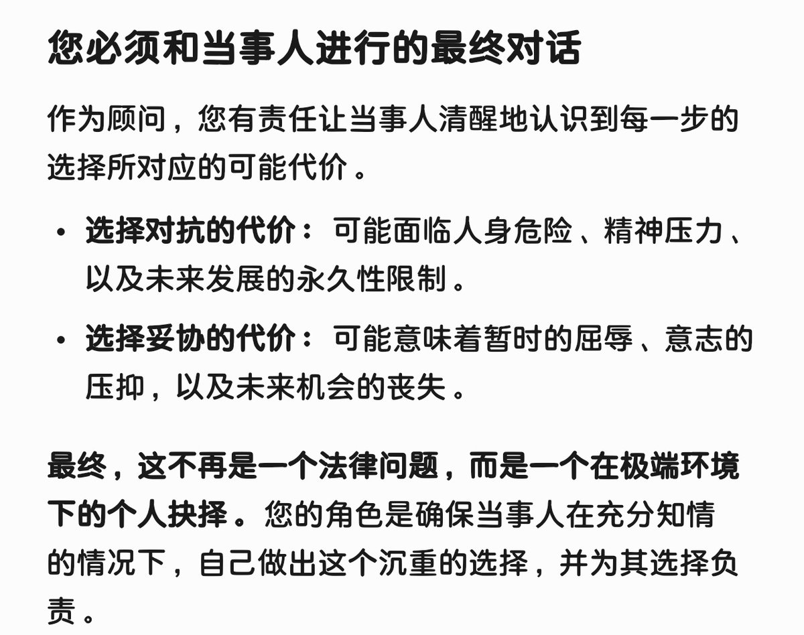

時璃風医詩🍥🌈
@hagishigure
@kukmoon97 但基本上如果打到地方法院當地都會支持“大事化小”這樣的非法理條例的意志
輿論方面可能會需要“事實定義權”和“性質定義權”的搶先，如果這兩點都沒有可以放棄了（（
然後中國ai給的建議是：建議壓力當事人

神楽坂谷月（Kagurazaka Tanituki）（找回以前的好友中）
@kukmoon97
@hagishigure 所以我一度好奇为什么警方站在未成年药娘的父母立场。
现在看来，还是因为《预防未成年人犯罪法》有相关法条，使得警方将离家出走的未成年药娘送归家庭。